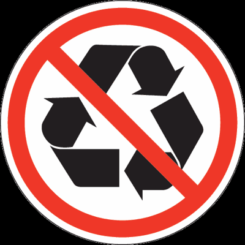

Non Recyclable Classification

Non recyclable
harm for Non recycling see more detail about harm
Kitchen waste
It includes food waste such as leftovers, bones, vegetable roots, and peels. Bio-technical treatment of compost can produce 0.6~0.7 tons of organic fertilizer per ton.
Other garbage
It includes hard-to-recycle waste such as brick and ceramics, muck, toilet paper, paper towels, etc., as well as shells, dust, and food bags (boxes). Sanitary landfills can effectively reduce pollution to groundwater, surface water, soil and air.
The big bones are listed as "other garbage" because of "difficult corrosion." Corn kernels, nut shells, fruit cores, chicken bones, etc. are kitchen waste.
toilet paper
oilet paper and toilet paper dissolve in water, not counting the "paper" that can be recycled, but also the cigarette case.
Kitchen garbage bagging
Commonly used plastic bags, even if they can be degraded, are far more difficult to corrode than kitchen waste. In addition, the plastic bag itself is recyclable. The correct approach should be to dump the kitchen waste into the trash can, and throw the plastic bag into the “recyclable garbage” bucket.
Toxic and harmful garbage
Contains heavy metals, toxic substances that are harmful to human health, or wastes that pose a real or potential hazard to the environment. Including batteries, fluorescent tubes, light bulbs, mercury thermometers, paint buckets, some home appliances, expired drugs, expired cosmetics. These wastes are generally disposed of separately or landfilled.